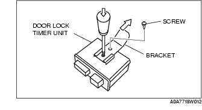

Door lock timer unit removal/installation
1. Disconnect the negative battery cable.
2. Remove the bolt.

3. Remove the door lock timer unit.
4. Disconnect the door lock timer unit connector.
5. Remove the urethane.
6. Remove the screw.

- • The screw which fixes the door lock timer unit and bracket is for a body ground connection. Be sure to secure the screw when installing.
7. Push the stopper with a compact driver and remove bracket.
8. Install in the reverse order of removal.